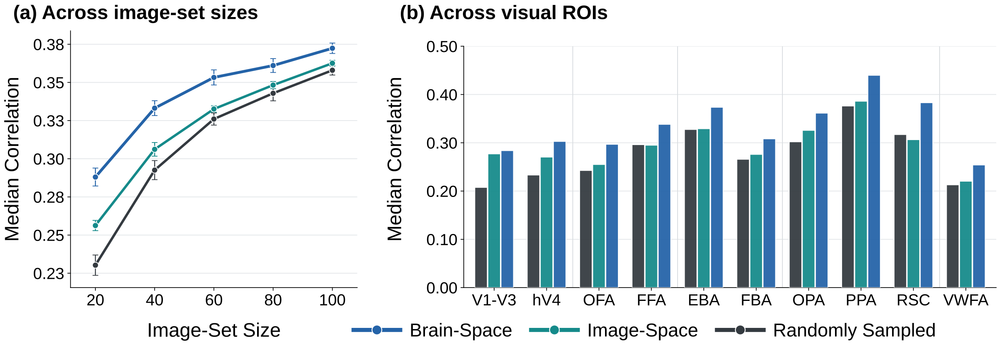
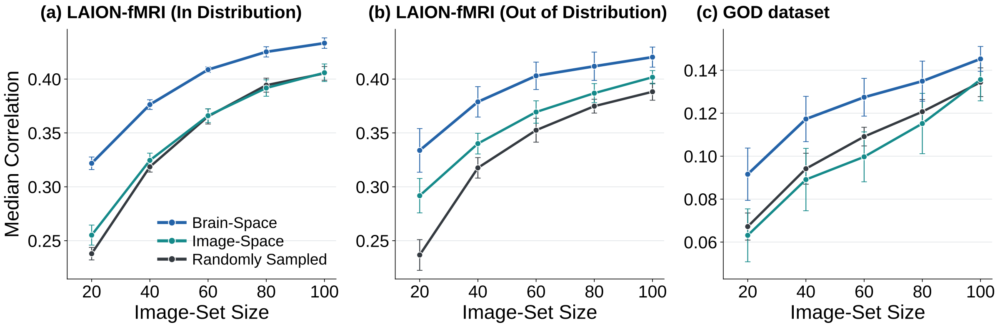
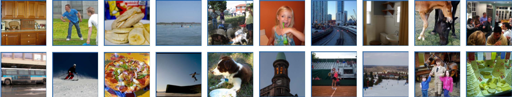
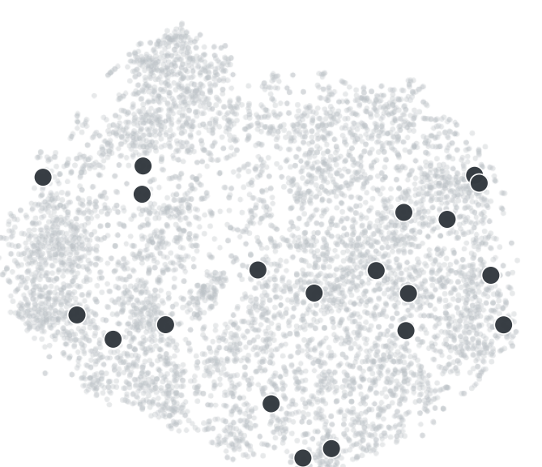
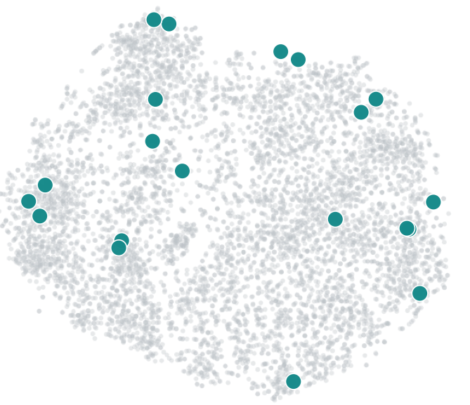
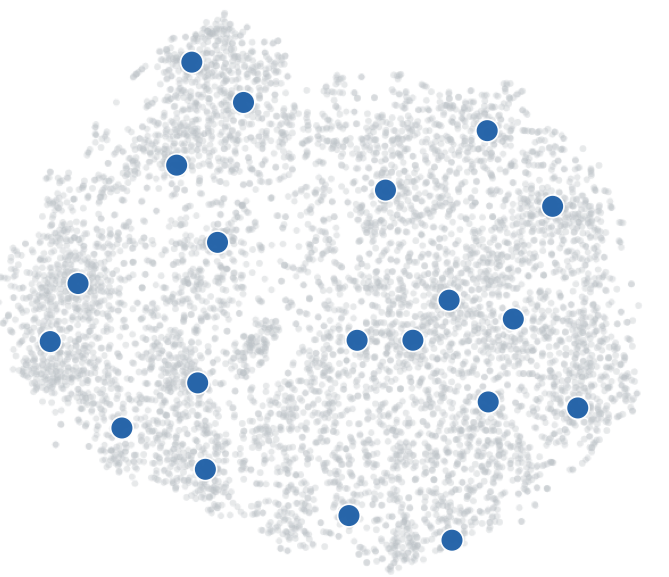

01 · Pre-scanned fMRI data
Start with an image-to-fMRI encoder trained on previously scanned participants. The Universal Encoder supports efficient transfer learning to a new participant.
Small Image-Set Selection for Image-to-fMRI Encoder Training
Weizmann Institute of Science · Princeton University
Image-to-fMRI encoders can predict how a person’s brain will respond to new images, but training them usually requires many image–fMRI measurements. Achieving higher accuracy with smaller training sets would substantially broaden the applicability of these encoding models, facilitating both large-scale studies of population variability and studies of how visual responses change with experience or intervention.
We treat stimulus selection as an optimization problem. We show that image sets chosen to cover the brain-response space of a well-scanned participant generalize to new participants and improve image-to-fMRI encoding when only a small number of images are scanned. We compare selection in brain-response space with selection in image-feature space. Both outperform random sampling, with Brain-Space selection providing the largest gains.
We aim to choose the most informative images to scan for a new participant, so an image-to-fMRI encoder can be adapted effectively from a small number of measurements. We build on the image-to-fMRI encoder of Beliy et al. and its efficient transfer learning approach.
Start with an image-to-fMRI encoder trained on previously scanned participants. The Universal Encoder supports efficient transfer learning to a new participant.
Choose the most informative images from the available candidate pool to scan for the new participant.
Select images randomly from the candidate pool, without explicitly optimizing for visual or neural coverage.
Represent each image with a foundation model such as DINO or CLIP, then select images to cover the resulting image-feature space.
Use the pre-trained image-to-fMRI encoder to predict each candidate image’s neural responses in previously scanned participants, then select images based on those predictions.
For each candidate image, the pre-trained encoder predicts neural responses in the source participants, mapping the image into their Brain-Space.
We select images whose predicted neural responses cover the source participants’ Brain-Space, creating a compact set for adapting the encoder to a new participant.
We can then scan the new participant using the selected images. We test this retrospectively with existing scans and find that the selected images also cover the participant’s measured Brain-Space, providing useful image–fMRI pairs for adapting the encoder with relatively few scans.
Both Image-Space and Brain-Space selection improve encoding over random sampling, and Brain-Space selection outperforms Image-Space. At 20 images, participant-averaged median voxelwise Pearson correlation rises from 0.230 with random sampling to 0.256 with Image-Space and 0.288 with Brain-Space selection.
Brain-Space selection improves encoding across visual regions. The gains over Image-Space are especially pronounced in regions selective for faces, bodies, and scenes.

We select LAION-fMRI training images using Brain-Space representations predicted by encoders trained on NSD participants. LAION-fMRI responses are not used during selection; after selection, the measured image–fMRI pairs are used to adapt the encoder for each target participant. This NSD-derived selection improves performance over random sampling on both in-distribution and out-of-distribution test images at every image budget. With 20 images, the relative gains over random sampling are about 35% and 41%, respectively.
We likewise select images for the 3T Generic Object Decoding (GOD) dataset using Brain-Space representations predicted by the NSD-trained Universal Encoder, without using GOD responses during selection. The selected images improve encoding on this dataset, which uses different acquisition conditions and includes object categories absent from the target training set. With 20 images, performance improves by about 37% over random sampling and 46% over Image-Space selection.

We test whether Brain-Space selection depends on the model used to predict candidate images’ neural responses. In place of the Universal Encoder, we use subject-specific Transformer encoders trained independently for each NSD source participant. The selection objective, downstream Universal Encoder adaptation, and evaluation remain fixed. Brain-Space selection with the Transformer closely matches selection with the Universal Encoder (0.282 vs. 0.288 at 20 images) and outperforms Image-Space and random sampling at every tested budget.
| Selection method | 20 images | 40 | 60 | 80 | 100 |
|---|---|---|---|---|---|
| Random | 0.232 | 0.294 | 0.327 | 0.346 | 0.361 |
| Image-Space | 0.259 | 0.310 | 0.335 | 0.351 | 0.364 |
| Brain-Space (Universal Encoder) | 0.288 | 0.333 | 0.353 | 0.361 | 0.372 |
| Brain-Space (Transformer) | 0.282 | 0.326 | 0.349 | 0.357 | 0.369 |
Median voxelwise Pearson correlation; higher is better.
Brain-Space-selected images improve a different downstream image-to-fMRI encoder at every tested image-set size. Selection uses the Universal Encoder; the selected images train a subject-specific Transformer from scratch.
| Selection method | 20 images | 40 | 60 | 80 | 100 |
|---|---|---|---|---|---|
| Random | 0.130 | 0.154 | 0.164 | 0.175 | 0.184 |
| Image-Space | 0.142 | 0.166 | 0.172 | 0.183 | 0.187 |
| Brain-Space | 0.177 | 0.192 | 0.196 | 0.201 | 0.207 |
Median voxelwise Pearson correlation on the NSD fixed test set; higher is better.
This example shows the 20 images selected with Brain-Space Coverage from NSD Subject 1, Candidate Pool 1.

Each gray dot is a candidate image, placed according to its neural response predicted by the NSD encoder. The responses are reduced to 50 dimensions with PCA and then shown in a two-dimensional t-SNE projection. Colored dots mark the 20 images chosen by each method. Brain-Space Coverage places selected images in candidate neighborhoods that are sparsely represented by Random and Image-Space Coverage. A separate quantitative analysis confirms that Brain-Space Coverage achieves higher coverage in both predicted source responses and measured target-participant responses. Because t-SNE can distort distances, the plotted spacing is not itself a coverage measure; selection and quantitative coverage are evaluated in the original response space.



Rapidly characterizing an individual’s visual representations from only a few image–fMRI pairs is practically important. Image-to-fMRI encoders extend what can be learned from fMRI measurements by predicting participant-specific responses to unscanned images, while cross-subject transfer further reduces the amount of data required to fine-tune a pre-trained model on a new participant. This makes the choice of the few images that are actually scanned an important part of the problem. Our work treats this as an experimental-design problem, optimizing the small image set specifically to support efficient encoder transfer. The improvement over Random sampling establishes the value of optimized stimulus selection, but the additional advantage over Image-Space is also significant. We hypothesize that this gap reflects an imperfect correspondence between visual and neural representations. Although deep networks capture aspects of visual brain representations, as assessed by benchmarks such as Brain-Score, this correspondence remains incomplete. Similarities in image-feature space may therefore differ from those in Brain-Space, so a set covering image space well does not necessarily provide good coverage of brain responses.
If you use this work, please cite:
@misc{wasserman2026which,
title = {Which Stimuli to Scan? Small Image-Set Selection for Image-to-fMRI Encoder Training},
author = {Wasserman, Navve and Beliy, Roman and Nguyen, Alex and Norman, Kenneth A. and Irani, Michal},
year = {2026}
}